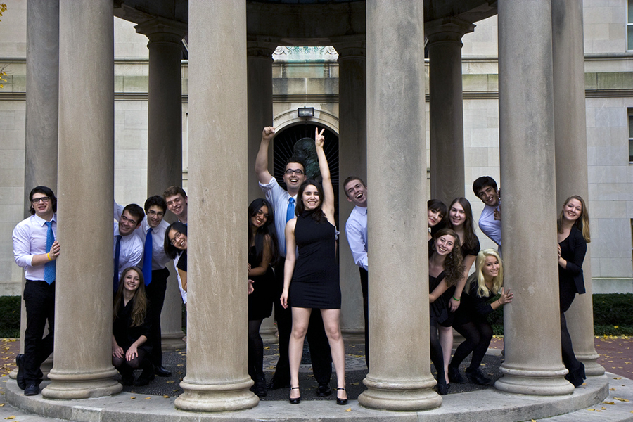
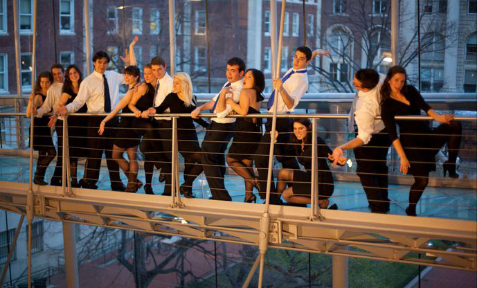
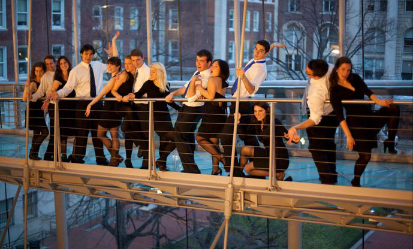
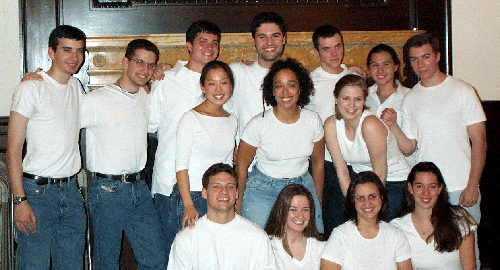
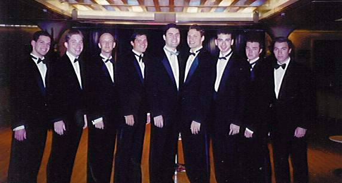
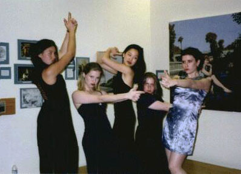

Alumni
Uptown Vocal was founded in 1991 by David Wiener, Rachel Tepfer and Rachel Harmon (née Rezak) as a co-ed A Cappella group at Columbia Univeristy. We began as the Catatonics, a fun-loving crew with big dreams of bringing the beautiful sounds of A Cappella to the Columbia community. It wasn't until 1995 that we took on the name Uptown Vocal and quickly became Columbia University's Premiere Jazz/Pop A Cappella Group!
Twenty years and 6 CDs later, we continue on our mission to make cool music while having a great time doing it, too! Along the way, we've honed our distinct Jazzy sound, picked up our signature "UV-niform" (black suit, blue tie, black dress) and cultivated a love for all things frijoles negros. We've performed on Cruise Ships, at the White House, at the Yankee's 100th Anniversary Dinner, and even opened for Ben Folds! So come take a walk with us down memory lane and look at the people who've made UV what it is today:
Back to the main page2013

Allison Heimann
School: Columbia College, Class of 2013
Position: Musical Director (2011-2013)
Hometown: Cleveland, OH
Voice Part: Soprano
Solos: But Not For Me, Fever, I Only Have Eyes for You, I've Got Rhythm
Arrangements: God Only Knows, Mas Que Nada, My Romance/Bad Romance, Moon River, Teenage Dream, Silver Bells, Besame Mucho
Featured On: Crazy in Luv (2010)
Mary Glenn

School: Barnard College, Class of 2013
Position: Business Manager (2012-2013)
Hometown: Boston, MA
Voice Part: Alto/Tenor
Solos: Caravan, My Romance/Bad Romance, Do It Again
Arrangements: A Nightingale Sang in Berkeley Square
Featured On: Crazy in Luv (2010)
Reuben Arnold
School: Columbia College, Class of 2013
Position: President (2012-2013)
Hometown: Wisconsin
Voice Part: Tenor
Solos: Let's Do It, Sophisticated Lady
Featured On: Crazy in Luv (2010)
2012
Rivka Friedlander

School: JTS/GS, Class of 2013
Position: Treasurer (2010-2011)
Hometown: Akron, OH
Voice Part: Soprano
Solos: "April (Come She Will)", "It Don't Mean a Thing", "Misty", "Moon River"
Featured On: Crazy in Luv (2010)
Julia Mix-Barrington

School: Barnard College, Class of 2012
Hometown: Amherst, MA
Voice Part: Alto
Solos: "42nd Street", "All the Single Ladies", "Here Comes the Rain Again", "Lullaby of Birdland" and "Twisted"
Featured On: Crazy in Luv (2010)
Laura Picard
School: Columbia College, Class of 2012
Hometown: Singapore
Voice Part: Alto
Solos: "All the Things You Are", "Autumn Leaves", and "Fly Me to the Moon"
Arrangements: The Night We Called it a Day
Connor Spahn

School: Columbia College, Class of 2012
Position: President (2011-2012)
Hometown: Freehold, NJ
Voice Part: Tenor
Solos: "Come on Eileen", "I Got Rhythm (Cottontail)", "I Wanna Be Like You", "My Funny Valentine", "Night and Day" and "Take the 'A' Train"
Arrangements: "But Not For Me", "Chattanooga Choo Choo", "I Wanna Be Like You", "Singin' In The Rain", "Too Darn Hot", "Everybody Wants to be a CAT", "Papparazzi", "the UVerture", "Sophisticated Lady" and "Straighten Up and Fly Right"
Featured On: Crazy in Luv (2010)
Where is he now: Connor is now living with Cecelia Brun Lie (2011), in Park Slope, Brooklyn. Working with Matt Stauffer (2009) and Ben Shapiro (2010) at FreshDirect in Queens."
2011
 

Erin Kara

School: Barnard College, Class of 2011
Position: Musical Director (2009-2010)
Hometown: Bethlehem, PA
Voice Part: Alto
Solos: "Cry Me a River" and "My Funny Valentine"
Featured On: Crazy in Luv (2010)
Adam Kunsberg
School: Columbia College, Class of 2011
Hometown: Bethesda, MD
Voice Part: Bass
Solos: "Fever" and "Papparazzi"
Arrangements: "The Way I Look Tonight"
Ben Leiwant

School: Columbia College, Class of 2011
Position: President (2010-2011)
Hometown: Hanover, NJ
Voice Part: Bass
Solos: "Autumn Leaves"
Featured On: Crazy in Luv (2010)
Cecelia Brun Lie

School: Barnard College, Class of 2011
Position: Musical Director (2009-2011)
Hometown: Ipswich, MA
Voice Part: Alto
Solos: "Crazy in Love", "All the Things You Are", "Lullaby of Birdland" and "Don't You Worry About a Thing"
Featured On: Crazy in Luv (2010)
Where is she now: "I live in Park Slope (Brooklyn, NY) with my older sister and Connor Spahn (CC '12), who is my boyfriend! I'm the Program Coordinator for the Writing and Speaking Programs at Barnard College, and also work part-time as Mary Gordon's personal assistant (she is a writer/professor at Barnard)."
2010

Ben Shapiro

School: GS/JTS, Class of 2010
Voice Part: Tenor
Solos: "Ain't Misbehavin'"
Featured On: Crazy in Luv (2010)
Sam Waldo
School: Columbia College, Class of 2010
Position: Co-President (2009-2010)
Hometown: Houston, Texas
Voice Part: Bass
Solos: "All the Things You Are", Autumn Leaves" and "Fly Me to the Moon"
Featured On: Crazy in Luv (2010)
Chris Wang
School: SEAS, Class of 2010
Position: Co-President (2009-2010)
Voice Part: Bass
Solos: "Take the 'A' Train", "Call Me Al", "Maneater" and "It's All Been Done"
Featured On: Crazy in Luv (2010)
Sami Wuu

School: Barnard College, Class of 2011
Hometown: Marlboro, NJ
Voice Part: Soprano
Solos: "Autumn Leaves" and "I Only Have Eyes"
Featured On: Crazy in Luv (2010)
Did You Know: Sami and Connor Spahn (2012) went to the same high school?
2009

Sarah Chang

School: Barnard College, Class of 2009
Position: President (2008-2009)
Hometown: Chicago, IL
Voice Part: Alto
Solos: "Here Comes the Rain Again", "Mas Que Nada" and "Twisted"
Featured On: Crazy in Luv (2010) and Black Beans (2005)
Lizzy Hewitt

School: Barnard College, Class of 2009
Position: Musical Director (2008-2009)
Hometown: San Francisco, CA
Voice Part: Soprano
Solos: "It Don't Mean a Thing", "How High the Moon", "Crazy in Luv" and "Twisted"
Featured On: Crazy in Luv (2010) and Black Beans (2005)
Chang Oh

School: Columbia College, Class of 2009
Voice Part: Tenor
Solos: "I Guess That's Why They Call It The Blues"
Arrangements: "Don't You Worry 'Bout a Thing"
Featured On: Crazy in Luv (2010)
Jisung Park

School: Columbia College, Class of 2009
Voice Part: Bass
Solos: "Mas Que Nada", Moondance" and "Fly Me to the Moon"
Featured On: Crazy in Luv (2010) and Black Beans (2005)
Matt Stauffer

School: GS, Class of 2009
Voice Part: Tenor
Hometown: Hastings, NY
Solos: "It Don't Mean a Thing", Pancreas", "Mack the Knife", How High the Moon" and "Maneater"
Arrangements: "Monster Mash", "Don't Mean a Thing", "Pancreas", "Crazy in Luv", "Twisted" and "All the Single Ladies"
Featured On: Crazy in Luv (2010)
2008

Johnna Jackson
Campbell Rightmyer
School: SEAS, Class of 2008
Position: Musical Director (2006-2008)
Hometown: Louisville, KY
Voice Part: Alto
Solos: "Caravan" and "All the Things You Are"
Arrangements: "42nd Street" and "Dizzy Disney"
Featured On: Black Beans (2005)
Caroline Sherman

School: Columbia Collge, Class of 2008
Hometown: Boston, MA
Solos: "Ain't Misbehavin'", "All the Things You Are", "Fever"
Featured On: Black Beans (2005)
2007
DK Kim

{kind=link}
{kind=link}
{kind=link}
{kind=link}
{kind=link}
{kind=link}
Grace Lee
School: Columbia College, Class of 2007
Position: Musical Director (2005-2007)
Voice Part: Soprano
Solos: "My Funny Valentine" and "Misty"
Featured On: Black Beans (2005)
Sarah Smick
School: Columbia College, Class of 2007
Featured On: Black Beans (2005)
Linh Truong
School: Columbia College, Class of 2007
Featured On: Black Beans (2005)
2006

Christina Chung
Everett Patterson
School: Columbia College, Class of 2006
Hometown: New Orleans, LA
Voice Part: Bass
Solos: "Take the 'A' Train" and "Everyone Else Has Had More Sex Than Me"
Arrangements: "Take the 'A' Train", "My Funny Valentine", "Everyone Else Has Had More Sex Than Me", "Fever" and "Cry Me a River"
Featured On: Black Beans (2005)
Daniel "Taco" Robles
School: Columbia College, Class of 2006
Position: Co-President (2005-2006)
Hometown: Los Angeles, CA
Voice Part: Tenor
Solos: "Fever"
Featured On: Black Beans (2005)
Jay Wong

School: Columbia College, Class of 2006
Position: Co-President (2005-2006)
Hometown: San Francisco, CA
Voice Part: Tenor
Solos: "Fly Me to the Moon" and "Moondance"
Featured On: Black Beans (2005)
2005


Steve Melzer
School: Columbia College, Class of 2005
Position: President (2003-2005)
Voice Part: Tenor
Solos: "It's All Been Done", "Misty" and "My Funny Valentine"
Arrangements: "Mas Que Nada" and "Still Fighting It"
Featured On: Black Beans (2005)
Hey Steve: I know you're reading this. Thanks for all the help, this whole project would have never been possible without you. Let future generations of Uptown Vocalians know that Steve Melzer was awesome!
Ray Ming Yeh
School: SEAS, Class of 2005
Position: Musical Director (2003-2005)
Hometown: West Chester
Voice Part: Baritone
Solos: "Autumn Leaves"
Featured On: Black Beans (2005)
2004
{kind=link}
{kind=link}
Charlie Hong
School: College of Physicians and Surgeons, Class of 2004
Voice Part: Bass
Featured On: Black Beans (2005)
Lethy Liriano
School: Columbia College, Class of 2004
Hometown: Manhattan
Voice Part: Alto
Solos: "Caravan", "Moondance", "New York State of Mind", "I Only Have Eyes For You"
Featured On: Black Beans (2005)
Jason Wilson
School: Columbia College, Class of 2004
Position: Treasurer (2001-2002)
Voice Part: Tenor
Solos: "Over the Mountain" and "Livin' on a Prayer"
Featured On: Black Beans (2005)
2003
{kind=link}
{kind=link}
Debbie Kaplan
School: Columbia College, Class of 2003
Position: Musical Director (2002-2003)
Voice Part: Soprano
Solos: "King of Pain", "Let's Do It" and "Unforgettable"
Featured On: Black Beans (2005) and Caravan (2000)
Kate Miltner

School: Barnard College, Class of 2003
Position: President (2002-2003)
Voice Part: Alto
Solos: "Only You" and "Human Nature"
Featured On: Black Beans (2005) and Caravan (2000)
Audrey Weston
School: Barnard College, Class of 2003
Voice Part: Soprano
Solos: "Be My Baby"
Featured On: Black Beans (2005)
2002
{kind=link}
Charles Donahoe
School: Columbia College, Class of 2002
Position: Co-President (2001-2002)
Voice Part: Tenor
Solos: "Come On Eileen", "Fields of Gold", "Mack the Knife", "You're the Boss"
Featured On: Black Beans (2005)
Noha Elbaz

School: Barnard College, Class of 2002
Position: Co-President (2001-2002)
Voice Part: Soprano
Solos: "Autumn Leaves", "Dancing Queen", "Night and Day", Blue", "Cornflake Girl"
Featured On: Black Beans (2005) and Caravan (2000)
David Elson
School: SEAS, Class of 2002
Position: Musical Director (2001-2002)
Voice Part: Bass
Solos: "All the Things You Are"
Arrangements: "Come on Eileen", "Unforgettable", "Thank You", "I Only Have Eyes For You", "Ain't Misbehavin'"
Featured On: Black Beans (2005) and Caravan (2000)
Ori Gratch
School: SEAS, Class of 2002
Position: Tour Manager
Voice Part: Bass
Solos: "Call Me Al"
Featured On: Black Beans (2005) and Caravan (2000)
2001
{kind=link}
David Blum
School: Columbia College, Class of 2001
Position: Business Manager (2000-2001)
Voice Part: Bass
Solos: "Chains of Love" and "In the Still of the Night"
Arrangements: "In the Still of the Night"
Featured On: Black Beans (2005) and Caravan (2000)
Emily Burkes-Nossiter
School: Columbia College, Class of 2001
Voice Part: Alto
Solos: "Bad Mama Jama", "Little Plastic Castle"
Arrangements: "Be My Baby"
Featured On: Black Beans (2005) and Caravan (2000)
Israel Gordan
School: Columbia College, Class of 2001
Position: President (2000-2001)
Hometown: Longmeadow, MA
Voice Part: Baritone
Solos: "All the Things You Are", "Father Figure", "The Girl from Ipanema", "Lullaby of Birdland"
Arrangements: "All the Things You Are", "The Girl from Ipanema"
Featured On: Black Beans (2005) and Caravan (2000)
Joe Rezek
School: Columbia College, Class of 2001
Position: Musical Director (2000-2001)
Hometown: Montana
Voice Part: Tenor
Solos: "How High the Moon", "Life's Gonna Suck", "The Sweetest Thing"
Arrangements: "April Come She Will", "Be My Baby", "Little Plastic Castle" and "The Sweetest Thing"
Featured On: Black Beans (2005) and Caravan (2000)
Sky Spiegel
School: Barnard College, Class of 2001
Position: Musical Director (1999-2001)
Voice Part: Soprano
Solos: "All the Things You Are", "Fields of Gold", "How High The Moon", "You're the Boss"
Arrangements: "Bad Mama Jama", "Call Me Al", "Chains of Love", "Dancing Queen", "It's All Been Done", "Lullaby of Birdland", "Only You"
Featured On: Black Beans (2005) and Caravan (2000)
2000
{kind=link}
{kind=link}
Amy Lin
School: Columbia College, Class of 2000
Position: President (1999-2000)
Voice Part: Alto
Solos: "Autumn Leaves", "Caravan", "I Got Rhythm", "Lullaby of Birdland"
Featured On: Emotional Equipaje (1997) and Caravan (2000)
1999
{kind=link}

Lori Alvino
School: Columbia College, Class of 1999
Position: Musical Director (1998-1999)
Voice Part: Mezzo
Solos: "I Got Rhythm", "Dancing Queen", "Fields of Gold", "Here Comes the Rain Again", "Lullaby of Birdland", "Walking on Broken Glass"
Arrangements: "Blue", "Here Comes the Rain Again", "Livin' on a Prayer", "Seven"
Featured On: Token Gesture (1997), Emotional Equipaje (1997) and Caravan (2000)
Jeff Becker
School: School of Social Work, Class of 1999
Voice Part: Tenor
Arrangements: "Cornflake Girl", "Over the Mountain", "You're the Boss"
Featured On: Caravan (2000)
Judy Kaplan
School: Columbia College, Class of 1999
Position: President (1997-1999)
Voice Part: Alto
Solos: "King of Pain"
Featured On: Emotional Equipaje (1997)
John Kuhl

School: Columbia College, Class of 1999
Position: Treasurer (1996-1997)
Voice Part: Bass
Arrangements: "Father Figure", "Heal the Pain", "Joga"
Featured On: Token Gesture (1997), Emotional Equipaje (1997) and Caravan (2000)
Brian Malmon
School: Columbia College, Class of 1999
Position: President 1998
Hometown: Potomac, MD
Voice Part: Bass
Solos: "Call Me Al", "You Can Be My Yoko Ono"
Featured On: Token Gesture (1997) and Emotional Equipaje (1997)
Brian was expected to return to the group in the fall of 2000, but he passed away on March 24th of that year. After his death, members of Uptown Vocal made him a memorial page, which we have chosen to preserve as it was in the year 2000. Here is that web page: In memory of Brian "Buzz" Malmon.
1998
{kind=link}
Paul Ferraro
School: SEAS, Class of 1998
Position: Treasurer 1997-1998
Voice Part: Bass
Solos: "Father Figure", "Fields of Gold", "Livin' on a Prayer"
Featured On: Emotional Equipaje (1997) and Caravan (2000)
Sarah Sharfstein
School: Columbia College, Class of 1998
Position: Musical Director (1997-1998)
Voice Part: Soprano
Solos: "How High The Moon", "Joga", "Let's Do It", "Night and Day", "Take a Chance On Me", "Take the 'A' Train", "Time After Time"
Arrangements: "Come to My Window", "Fields of Gold", "Human Nature", "King of Pain", "Least Complicated", "These Are Days", "Time After Time"
Featured On: Token Gesture (1997), Emotional Equipaje (1997) and Caravan (2000)
Amanda Stein
School: Barnard College, Class of 1998
Position: Business Manager
Voice Part: Soprano
Solos: "Chains of Love", "Come to My Window", "I Got Rhythm", "King of Pain", "Least Complicated"
Featured On: Token Gesture (1997), Emotional Equipaje (1997) and Caravan (2000)
Elizabeth Wilson-Rood
School: Columbia College, Class of 1998
Position: Tour Manager
Solos: "How High the Moon", "Take a Chance on Me", "Under African Skies"
Arrangements: "Good Lovin'"
Featured On: Token Gesture (1997)
1997
{kind=link}
{kind=link}
David Bernstein

School: Columbia College, Class of 1997
Position: President (1996-1997)
Hometown: Massachusetts
Voice Part: Bass
Featured On: Token Gesture (1996) and Emotional Equipaje (1997)
James Brust
School: Columbia College, Class of 1997
Position: Musical Director (1995-1997)
Voice Part: Bass
Solos: "Autumn Leaves", "How High The Moon", "Let's Do It", "Life's Gonna Suck", "Under African Skies"
Arrangements: "Night and Day", "How High the Moon", "Think For Yourself", "Carolina in My Mind", "Let's Do It", "The Music Hum Medley" "Moondance (Van Morrison)", "Haydn Leung", "Happy Birthday", "Autumn Leaves", "I Got Rhythm Medley" "All the Things You Are" (Kern/Hammerstein), "Caravan" "Mack The Knife", "Misty", "Fly Me to the Moon"
Featured On: Token Gesture (1996) and Emotional Equipaje (1997)
Trevor Hochman

School: Law School, Class of 1997
Voice Part: Bass
Solos: "The I Got Rhythm Medley", "Maneater", "Seven", "Time After Time"
Arrangements: "The Girl from Ipanema", "Maneater"
Featured On: Emotional Equipaje (1997)
Haydn Leung
School: Columbia College and SEAS, Class of 1997
Voice Part: Tenor
Solos: "Heal the Pain", "Moondance"
Featured On: Emotional Equipaje (1997)
1996
{kind=link}
{kind=link}
Noah Cornman
School: Columbia College, Class of 1996
Position: President (1995-1996)
Hometown: Irvington-on-Hudson
Voice Part: Tenor
Solos: "Good Lovin'" and She's Got A Way"
Arrangements: "Doin' Laundry"
Featured On: Token Gesture (1996)
Stefanie Lally
School: Columbia College, Class of 1996
Solos: "Least Complicated"
Featured On: Token Gesture (1996)
Nina Russakoff
School: Columbia College, Class of 1996
Position: Musical Director (1994-1995)
Voice Part: Alto
Solos: "Take a Chance on Me"
Arrangements: "Can't Help Falling in Love", "I've Got a Crush On You", "She's Got a Way", "Take a Chance On Me", "Under African Skies", "Walking on Broken Glass" and "You Can Be My Yoko Ono"
Featured On: Token Gesture (1996)
William Wolfe
School: School of General Studies, PostBac
Voice Part: Bass
Solos: "The Sound of Silence"
Featured On: Token Gesture (1996)